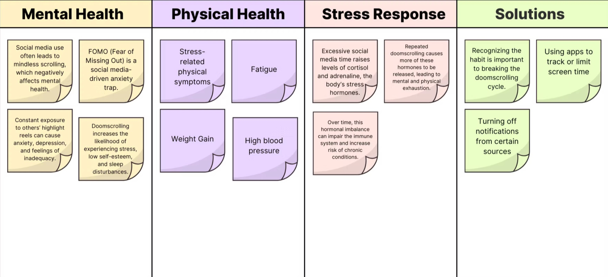
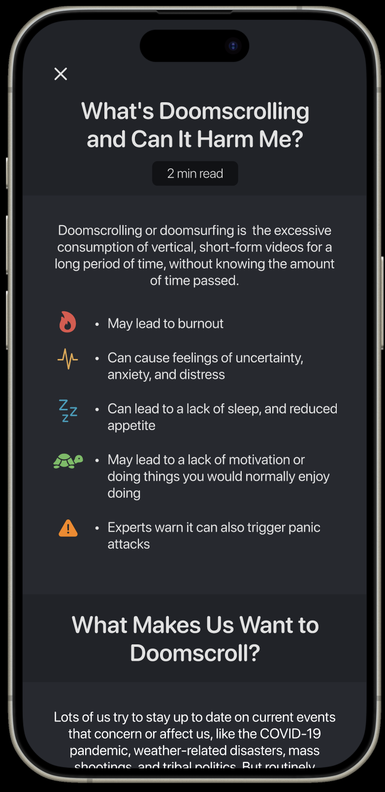
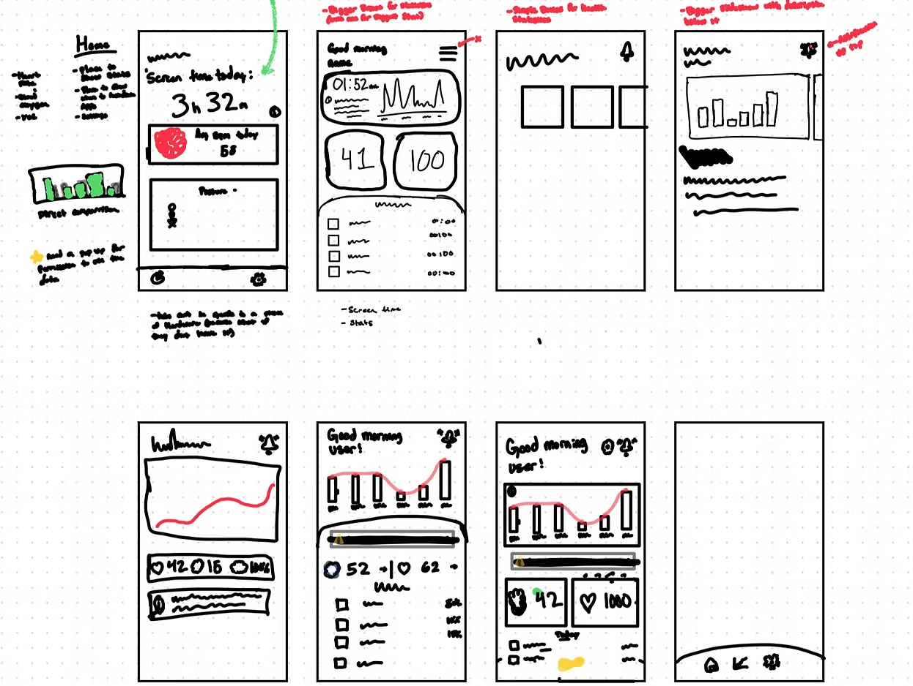
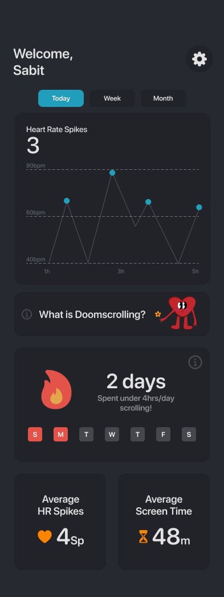
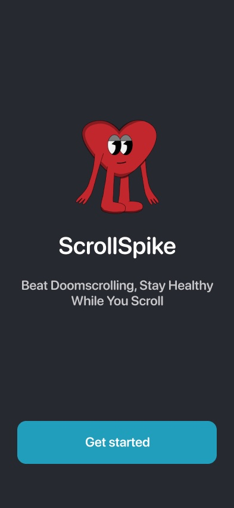
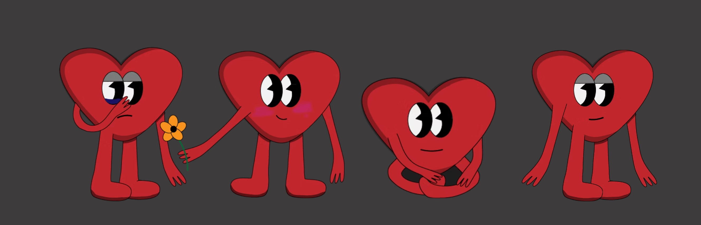
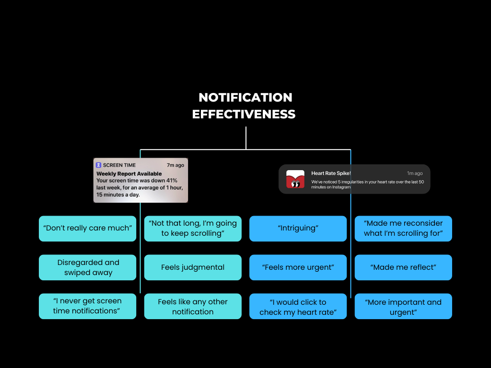
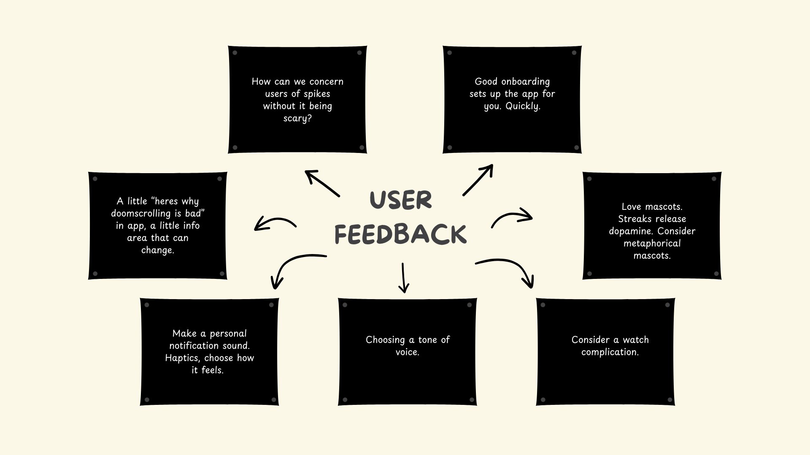

01 — Health & behavior
Scroll Spike
Tracks your heart rate during screen time to reveal, in real time, what your phone use is doing to your body — helping Gen Z break the doomscrolling cycle.

01 — Health & behavior
Tracks your heart rate during screen time to reveal, in real time, what your phone use is doing to your body — helping Gen Z break the doomscrolling cycle.
I started by mapping what doomscrolling actually does, and the findings sorted themselves into four groups: mental health, physical health, the body's stress response, and existing solutions.
The physical column was the one that changed the project. Excessive social media time raises cortisol and adrenaline; repeated doomscrolling keeps those stress hormones cycling, leading to fatigue, elevated blood pressure, and over time a measurably weakened immune system. This wasn't a mood problem with physical side effects. It was a physiological event happening in the body, in real time, while the user felt nothing unusual at all.
Meanwhile the solutions column was thin — and everything in it amounted to the same idea: track your time, or turn off notifications. Nothing connected the behavior to the body.

Doomscrolling is a health crisis hiding in plain sight. Millions of people, especially Generation Z, spend hours a day scrolling without registering what it's taking from them mentally, physically, or emotionally.
Existing screen time tools report usage after the fact — a weekly summary, delivered long after the behavior, with no link between the scrolling and its effect on your body. So users dismiss them. The notifications read as nagging and irrelevant, because that's exactly what they are: a number you didn't ask for about a week you can't change.
The damage is already measurable. It's just invisible. Make it visible and the argument makes itself.
That reframe set the whole design brief. Not "help people use their phones less" — "show people what their phone is doing to them while it's still doing it."

There were no external constraints on this project, which meant the hardest part was restraint. Early sketches tried to show everything at once — screen time, heart rate, blood oxygen, app breakdowns, stats on stats.
Annotating my own wireframes is where it got cut down. The notes I kept writing to myself were all versions of the same instruction: bigger numbers, fewer of them. A dashboard someone glances at while already distracted can carry one idea, not six.

This is the core bet of the product. Apple's Screen Time notification reports a statistic about your past. Scroll Spike's reports an irregularity in your body, right now: "We've noticed 5 irregularities in your heart rate over the last 50 minutes on Instagram." No opinion, no scolding, no implied failure — just a fact about you that you didn't have a second ago. The urgency comes from the information being about your heart, not from the tone.
Spike carries the emotional weight so the copy doesn't have to. A heart with a face can look concerned in a way a sentence can't without sounding preachy — and it gives the app a consistent presence across notifications and widgets, so the reminder feels like a character checking in rather than a system issuing a warning. It also solved a real tension from testing: how to make someone take a heart-rate spike seriously without frightening them about their health.
The dashboard opens on a single figure — heart rate spikes today — plotted against your resting range so the deviation is the shape you see first. Everything else sits below it. Today / Week / Month is one tap, not a separate screen, because the question "is this normal for me?" needs an immediate answer to be worth anything.



The central question was whether the notification premise actually worked, so I tested it directly: I showed users Apple's Screen Time notification and Scroll Spike's heart rate notification, and recorded their reactions to each.
The split was total. The Screen Time notification produced "don't really care much," "feels judgmental," "disregarded and swiped away." The heart rate notification produced "intriguing," "feels more urgent," "I would click to check my heart rate." Same person, same session, opposite response.

The wider feedback session surfaced two changes that shaped the final build.
Users wanted to define what "too much" meant for them rather than be handed a threshold. Onboarding now asks you to pick a goal — Casual, Normal, Intense, Extreme — so every later notification is measured against a line you drew yourself. It's much harder to dismiss a limit you set.
Testers were more interested in streaks than I expected. The insight: if they could hold themselves accountable through gamification, they were more likely to keep their phone time down. Knowing the damage got their attention; a streak they didn't want to break is what actually changed the behavior. Feedback put it bluntly — "streaks release dopamine."

The premise held up. Users who had spent years ignoring screen time notifications responded to the same behavior reframed as a body signal — and said so in their own words.
"Made me reconsider what I'm scrolling for. I would actually click to check my heart rate."
User testing participant
"The Screen Time one I'd just swipe away. This one actually made me reflect."
User testing participant
"It feels more important and urgent — not judgmental, but like it actually matters."
User testing participant
What I'd take further: the feedback board asked for a watch complication and customisable haptics — both of which would move the intervention closer to the moment it's describing. A spike you feel on your wrist is a different argument than a spike you read about on the screen you're already stuck to.
Next project
Door Greeters →